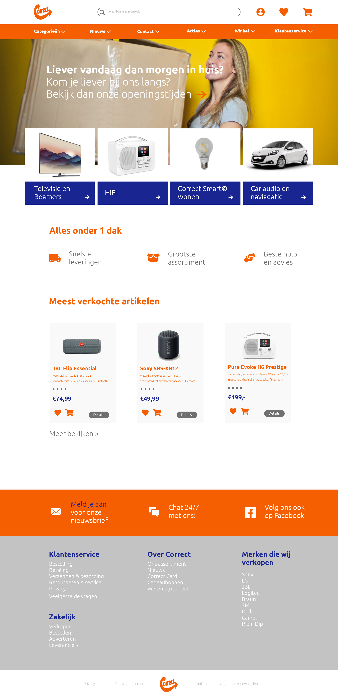
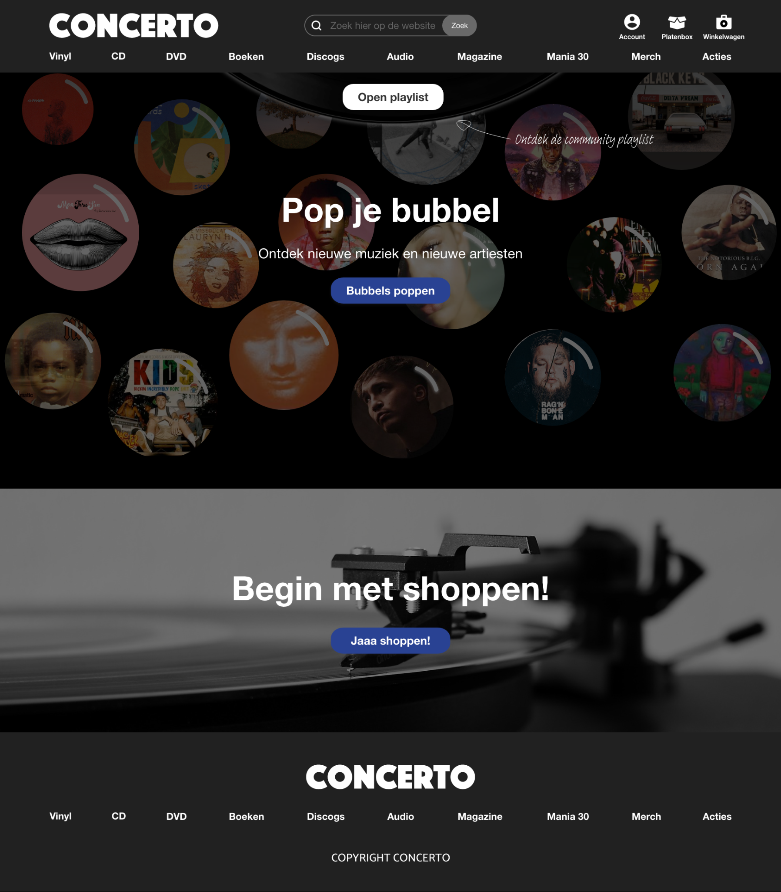
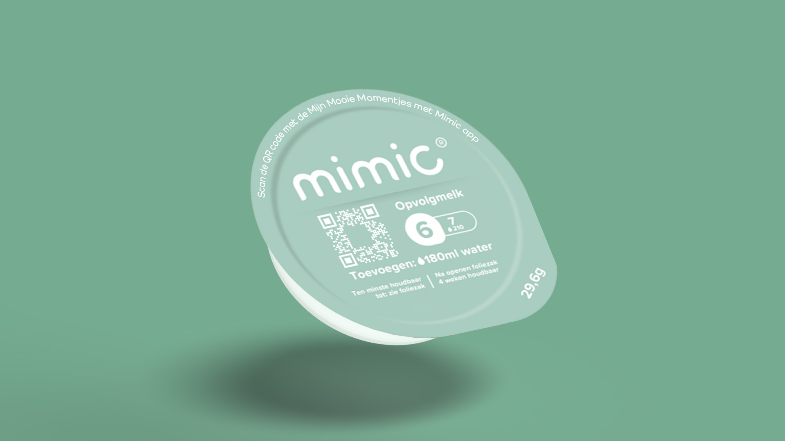
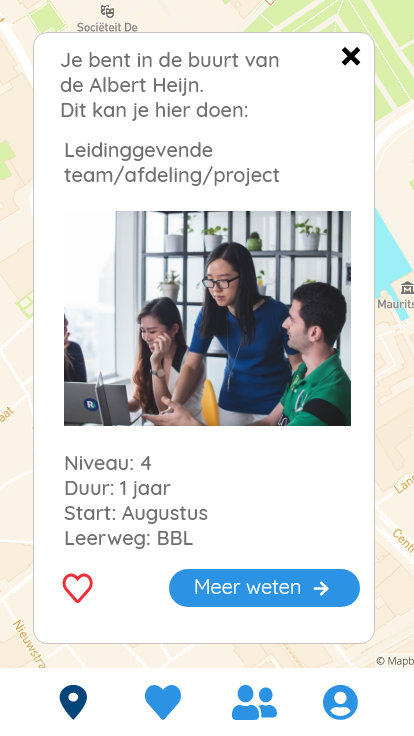
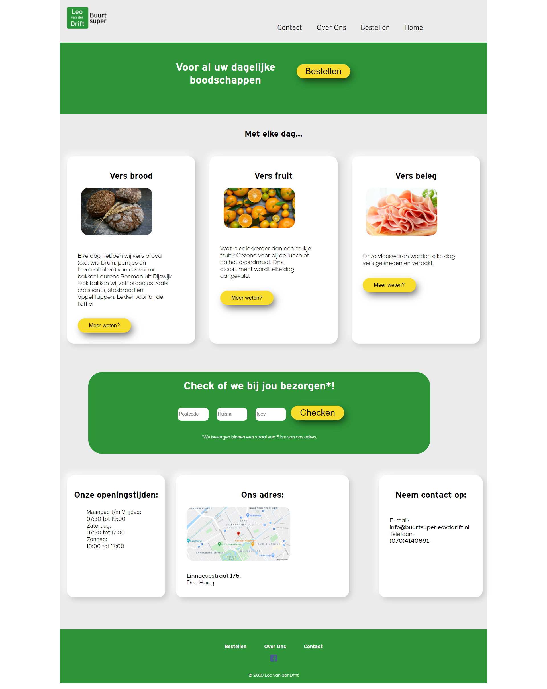
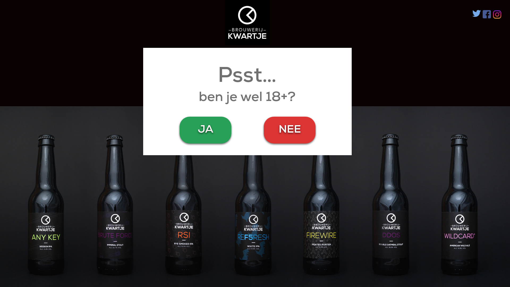

-
Opdracht: Herdesign Correct
Samen met een klasgenoot hebben we een herdesign bedacht voor de webwinkel van correct.nl en hebben we geleerd patterns toe te passen in een interface ontwerp.
Vak: Visual Interface Design & Prototyping
Tools: Adobe XD, Adobe Indesign
Prototype:
https://xd.adobe.com/view/e871937b-e4be-4d75-7850-c5baf542d40e-9e40/?fullscreen&hints=off Demo -
Opdracht: Psychologie Blog

Per week werd er een nieuw onderwerp besproken in de hoorcolleges waar achteraf dieper onderzoek naar moest worden gedaan. Alles wat in gevonden heb heb ik bijgehouden in een blog. Om extra te oefenen heb ik mijn blog gecodeerd.
Vak: Psychology of Interaction Design
Tools: HTML, CSS
Website:
https://rooshuber.github.io/Designingwiththemindinmind/ -
Opdracht: Website SpaceX

In dit vak heb ik geleerd over het ontwerpen en het bouwen van data visualisaties, het weergeven van data uit een externe bron, CSS animaties gebruik, werken met externe tools (SDK's) en API's.
Vak: XT2 - IXD & Technology 2
Tools: HTML, CSS, JS, Adobe XD
Website:
https://rooshuber.github.io/challenge3/ -
Opdracht: Modulo

Samen met mijn werkgroepje hebben we van de opdrachtgever de opdracht gekregen om een digitale oplossing te realizeren waar gebruikers (patiënten die lijden van claudicatio intermittens) in het dagelijks leven gehoplen en ondersteund kunnen worden door de fysiotherapeut.
Vak: Project 1: Usable Design
Tools: Adobe XD, Adobe Indesign
Prototype:
https://xd.adobe.com/view/e30573cf-127e-4133-91a6-eeba1580039d-b656/ -
Opdracht: HT Portfolio

In dit portfolio heb ik alles wat we in dit vak gedaan hebben gedocumenteerd.
Vak: HCI Technologies
Tools:HTML, CSS, Js, Arduino, Unreal Engine
-
Opdracht: Concerto
De huidige online winkel brengt de winkelervaring van de fysieke winkels niet over, waardoor ze de kans om zich te onderschieden van concurrentie mislopen. Ik heb me samen met mijn groepje verdiept in hoe dit probleem opgelost kan worden.
Vak: User Experience
Tools: Adobe XD
Prototype:
https://xd.adobe.com/view/44fd0b11-44b1-41d0-9979-02916459e6a2-11ae/ -
Opdracht: Campaign Design
Wij zijn door Mimic benaderd om een online campagne te bedenken wat klant-trouwheid zou inspireren.
Vak: Project Designing for communities
Tools: Adobe XD, Adobe Indesign
Campange boek:
Campagneboek_Mimic.pdf -
Opdracht: ROC Buddy
Het ROC Mondriaan wil aankomende studenten de mogelijk bieden om sfeer te proeven en een betere studiekeuze te maken. De digitale oplossing moest gebruik maken van de sensoren van smartphones.
Vak: Context Aware Design
Tools: Adobe XD
Prototype:
https://xd.adobe.com/view/6f37425d-dcfd-48b3-8020-c2525fd0c3f7-3a64/?fullscreen&hints=off -
Opdracht: Herdesign Website Buurtsuper
De opdracht was om van de huidige site te herzien en beter leesbaar te maken op verschillende schermgroottes. We moesten gebrui maken van een CSS grid-systeem en/of flexbox, het moest responsief en mobile-first zijn.
Vak: XT1 - IXD & Technology 1
Tools:HTML, CSS, Adobe XD
Website:
https://rooshuber.github.io/leovddrift/ -
Opdracht: Design Website Kwartje
Brouwerij Kwartje had nog geen website en er werd aan ons gevraagd om er een te designen en coderen.
Vak: Project Studio 2
Tools:HTML, CSS, JS, Adobe XD, Adobe Photoshop
Prototype:
https://xd.adobe.com/view/6328058f-2a34-4610-63e0-77bd4c164c7b-1519/ -
Opdracht: Portfolio

Op basis van alles wat ik tot nu toe geleerd heb, heb ik een portfolio gemaakt.
Vak: Project Studio 3
Tools: Adobe XD
Prototype:
https://xd.adobe.com/view/14c41bf3-20ce-4ef6-477b-cb56bfb98c40-62f5/?fullscreen&hints=off